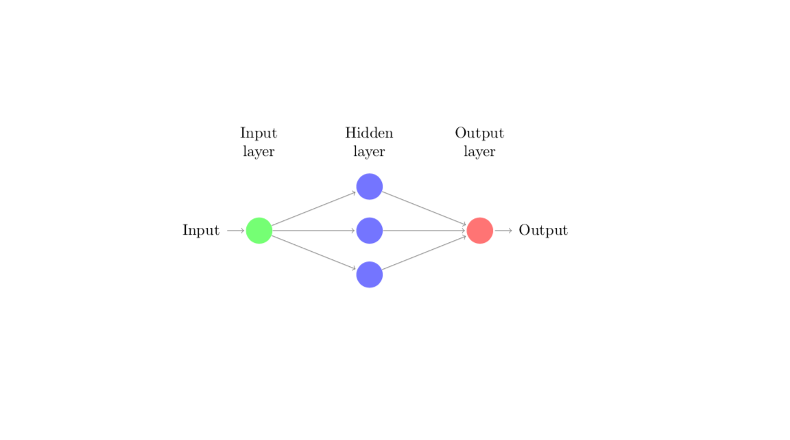
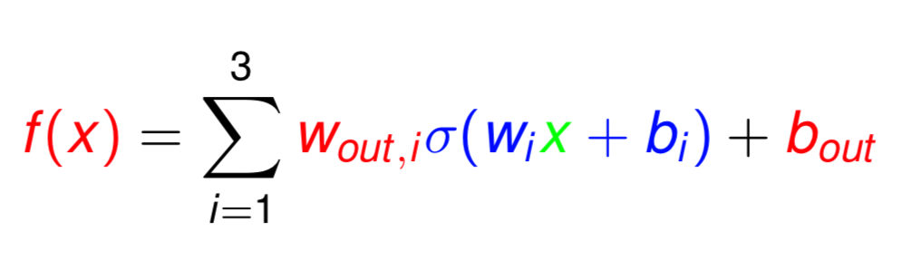
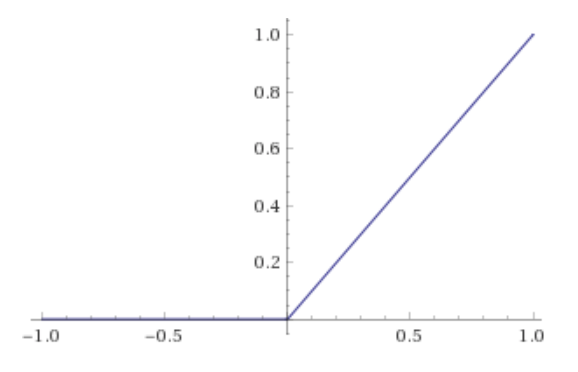

Towards a mathematical understanding of using neural networks for function approximation.
An artificial neural network (ANN) is a computational framework inspired by the interactions of neurons in the brain.
Recently many difficult problems have been effectively solved using algorithms and mathematical models which iteratively improve their performance based on data rather than explicitly finding a solution. Such methods, which primarily rely on data rather than explicit solution techniques, can be grouped together under the umbrella of Machine Learning. The field of machine learning is rapidly exanding and new results often draw on a diverse background of mathematical, statistical, and even physics based methods. However, many of its most dramatic successes involve neural networks. Some examples I find interesting are:
- Image Classification – A neural network is trained to classify handwritten numbers using a dataset of pre-labelled images of handwritten numbers. It is even able to classify images of digits not contained in the training set.
- Artificial intelligence – Move prediction and selection for the game “Go” by a neural network. This network was able to beat a top level human player.
- Reinforced Learning – A robotic hand controlled by a neural network is trained to manipulate a cube to requested positions. The network uses data from a camera to assess the current state of the cube and choose actions for the hand to perform in order to rotate it to a desired position.
All three of these examples employ a neural network to solve a complex problem.
There are many fundamental theoretical questions that remain (partially) unanswered about ANNs, e.g.,
- All networks require some training, a process by which pairs of inputs and outputs are used to set the internal parameters of the model. A popular strategy for training is accomplished by stochastic gradient descent (SDG). The convergence of this optimization problem is not well quantified or well understood.
- Given a network with a particular architecture, how does one determine the class of functions it can express? Moreover, even if optimal parameters can be shown to exist, are they easy to learn?
- Under what conditions will a network generalize well to inputs and outputs not contained in the training set? Some networks experience very bad overfitting and do not make good predictions for new incoming data.
In order to make sense of any of these theoretical considerations in a mathematical context it is useful to characterize ANN’s as both functions and graphs. In this post we will consider designing a network to approximate a given analytic function $f$. As a function, the network can be interpreted as a mapping from $\mathbb{R}^d$ to $\mathbb{R}^k$ where $d$ is the number of inputs to the network and $k$ is the number of ouputs. Let $$u_{NN}:\mathbb{R}^d \rightarrow \mathbb{R}^k$$ be the functional interpretation of the neural network approximating an analytic function $u$. The function $u_{NN}$ is computed by a combining a series computations performed by constituent functions. The interactions between the constituent functions that make up the network can be described by a directed acylic graph. The associated graph can be used to analyze the complexity of the network defined as the number of trainable parameters.
Simply put, a neural network can be characterized as a function consisting of compositions and linear combinations of constituent functions called neurons which perform a computation of the form $$ \sigma \left( \sum_{i=1}^k w_i \cdot x_i + b \right).$$
- $x_i$ – The inputs for the computation. They could be the result of computations performed by other neurons or raw input.
- $w_i$ – The weight associated with the incoming data $x_i$.
- $\sigma$ – A nonlinear function called the activation function.
- $b$ – A number called the bias of the neuron.
Nonlinear functions and graphs
Below is a simple example showing the dual characterization of a single hidden layer ANN.
 A single hidden layer network with three neurons.
This graph depicts how each of the constituent computations are used to form the final output of the network. Here we call the function induced by the network $f$. The function $f$ maps the input $x$ to the output $f(x)$ and is computed as a linear combination of the computations performed in the hidden layer. One can also write $f$ so that it is easily recognized as a funciton.
 The network as a function.
This representation makes explicit the mapping how $f$ maps the input $x$ to the output $f(x)$. It also shows how the mapping induced by the network depends entirely on the choice of the weights, biases and the activation function. Choosing these parameters directly determines how well the network $f$ performs its task.
Suppose that we wish to design a network for function approximation, i.e., one is tasked to choose the parameters of $f$ so that it produces the same input–output pairs as a function $g:\mathbb{R} \rightarrow \mathbb{R}$. The problem of finding an optimal approximation of $g$ is then finding the optimal parameters for $f$ so that the quantity $error$ is as small as possible where $$ error = ||f - g||$$ for an appropriately chosen norm $|| \cdot ||$. Notice that the approximation power of $f$ also depends on the choice of $\sigma$. It is possible to consider $\sigma$ as a parameter, but there are several established choices for $\sigma$ that are widely used, see e.g. activation functions. Here I will consider using the so called Rectified Linear Unit (ReLU) activation function.
 The ReLU actication function is a piecewise linear function.
The network $f$ is a very simple network. Networks with a single hidden layer are called shallow networks and in practice shallow networks have been shown to have limited usage. In fact, it is known that deep networks, i.e. networks with more than one hidden layer, are more expressive than shallow in the sense that they require less complex structure in order to express a given funciton. See the work of Mhaskar.
The architecture of a network depends on its application
In practice, the design of neural networks is linked to their desired application. For instance, neural networks used for image classification typically involve convolutional kernels which extract local features. To my knowledge there is no clear theoretical justification of this choice of architecture. However, since there are successful image processing methods which exploit local and global image information simultaneously in a similar way to convolutional layers in a neural network, .e.g., LDMM and NONLOCAL MEANS.
When designing a network to approximate a function it is therefore reasonable for the architecture of a proposed network to depend on a particular function approximation scheme or at least be inspired by an approximation scheme. This choice also allows one to take advantage of the large body of theoretical work describing methods to approximate functions (of various levels of smoothness and dimension). I’m currently analyzing a network based on polynomial approximation of high-dimensional functions as well as implementing one.
Check this post in the near future for some preliminary numerical results of this network as well as some theoretical estimates of its expressive power.